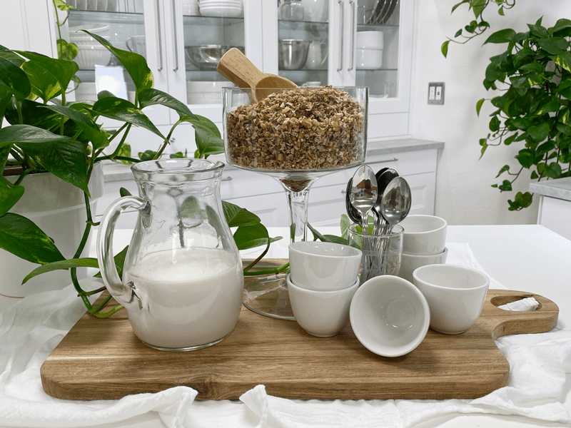
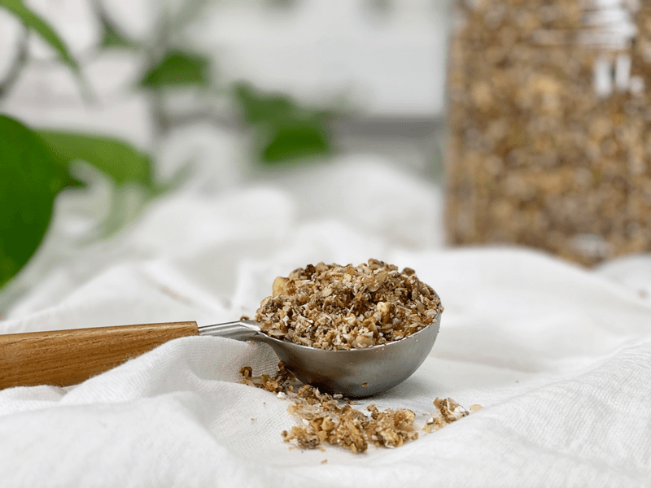
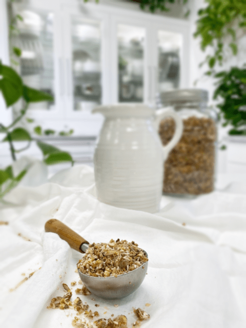
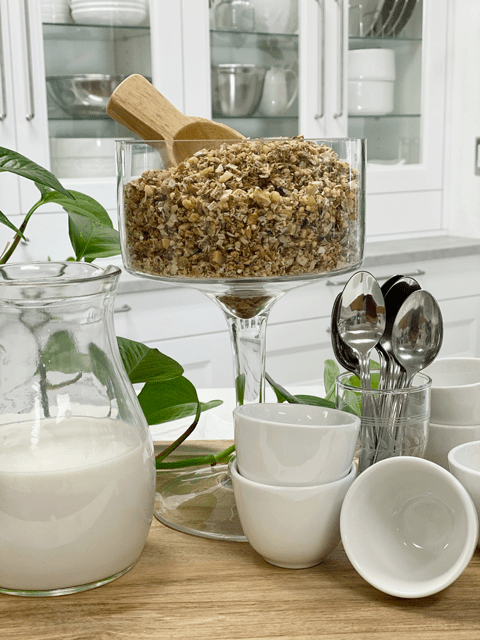

Gingerly Pear Granola
Granola cereal is one of my favorite foods to eat. You can have it with nut milk or coconut milk for breakfast, sprinkle it on top of a smoothie bowl for lunch, eat it by the handful, or use it as a topping for your yogurt as a snack. It’s hearty, satiating, energizing, packed with nutrition, and downright satisfying.

But, that’s not always the case, most commercially made granolas or cereal are loaded with sugar. My goal for this recipe was to make it without any sugar. I used fresh fruit, which still has natural sugar in it but perhaps the lesser of sugar evils?! The key to using fresh fruit as a sweetener is to make sure that the fruit is RIPE. So be sure to give them a taste test before using them.
Another thing that I love about granola/cereal is the crunch factor! The texture of food plays a significant role in our eating experience. Don’t confuse this with eating with your mouth open. Lol, That’s not the experience I am seeking. This whole crunch craving factor sprung me into research mode. There had to be a logical reason why we all gravitate to crunchy food. Low and behold, Google did not disappoint!

According to neuroscience, what you hear when while eating plays an essential role in your experience and enjoyment of food. I can relate to that. It turns out that crispness and pleasantness are highly correlated when it comes to our rating of foods. They refer to crispiness a flavor quality. It has been shown that by synchronizing eating sounds with the act of consumption, one can change a person’s experience of what they think that they are eating.
This “crunch factor” makes total sense to me when you read how marketers promote foods. Next time you are the grocery store, pay attention to the adjectives they put on cereal boxes. Taglines like “extra crunch”, “exceptionally crunchy,” “Listen to the snap, crackle, and pop of a Rice Krispies bowl”, “Stays crunchy even in milk”, or “The crunchy way to say, ‘I love you”. What do you think? Do you ever crave crunchy foods?
So are you ready to give my Gingerly Pear Granola a try? Before you do, I must explain why I did a play on words with the word ginger. The recipe contains ginger, but one must use it “gingerly.” If you don’t use enough, it won’t be detected. If you use TOO much, it can cause your taste buds to clam right up. If you don’t know what your pleasure limits are, use the “less is more” technique. Then give it a taste test to see if you want more. Just a suggestion. Well, I hope you enjoy this recipe and have a blessed day, amie sue

Ingredients:
yields 2 trays – in freezer
- 2 cups (340 g) raw walnuts, soaked, chopped
- 1 cup (223 g) buckwheat kernels, soaked
- 1 cup (195 g) raw pumpkin seeds, soaked
- 2 cups (146 g) unsweetened dried shredded coconut flakes
- 1/3 cup (68 g) chia seeds
- 1/4 cup (35 g) golden flax seeds
- 2 cups (350 g) diced fresh pear
- 4 cups (620 g) diced fresh pear (for sauce/sweetener)
- 1 Tbsp (11 g) vanilla extract
- 1 tsp (7 g) sea salt
- 1-2 tsp (4-8 g) ground ginger
Preparation
- In a large bowl, combine the chopped walnuts, buckwheat, pumpkin seeds, coconut flakes, chia seeds, flax seeds, and the 2 cups of diced fresh pear. Give it a good toss.
- In a food processor, fitted with the “S” blade, puree the 4 cups of diced pears along with the vanilla extract, salt, and ginger. Pour this over the dry ingredients and stir everything together.
- As you have noticed, I split the fresh pears into 2 measurements and used them in 2 different ways. The diced pears that are tossed with the ingredients will add pockets of texture and flavor. The pureed pear will more evenly coat all the parts, thus dispersing the sweetness throughout the granola. Plus, it acts as a binder to hold the ingredients together.
- Spread the batter onto a non-stick dehydrator sheet and dehydrate at 145 degrees (F) for 1 hour, then reduce to 115 degrees (F) and continue to dry to 10+ hours (or until completely dry).
- I ended up breaking up the granola by processing them in the food processor to create more a small crumble to enjoy as a cereal.
- Store in an airtight container on the counter for several weeks or in the freezer for several months.

© AmieSue.com